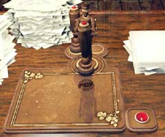

| 概要 | 地図 | |
| 淡いヒント集 | ヒント集 | 的確なヒント集 |
| 攻略最短ルート | Syberia 攻略へ |
| << 前の段階へ | 地域選択へ | 次の段階へ >> |
バラディレーン
|
市街と公証人の家
この扉を開くことができれば、工場の扉が開く。しかし、部品が一つ足りない。この部品は、公証人の家にあるので探してみよう。 取り付けると、このようになり。あとは、下の人形のねじを巻き、レバーを動かせば扉は開く。  公証人の家の玄関に付いているカラクリ人形である。手のひらに、書類を載せて、胸のレバーを押して首を下げ、肩のレバーを動かし書類を見せる。そうすると、扉を開けてくれるだろう。 このようになる。

この人形は、まだ必要がない。今は無視しよう。 |
| << 前の段階へ | 地域選択へ | 次の段階へ >> |
| 概要 | 地図 | |
| 淡いヒント集 | ヒント集 | 的確なヒント集 |
| 攻略最短ルート | Syberia 攻略へ |
Syberia
| 目次へ戻る | ページの上部へ |